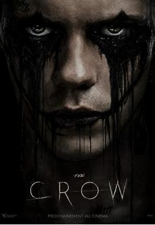
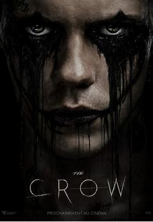

New York City, Day 1 of the alien invasion. In the first hours of the extraterrestrial assault on Earth, months before the events of A Quiet Place(2018), sullen loner Samira sees a typical field trip to Manhattan turn into absolute terror when mysterious objects pierce the atmosphere. in search of shelter and solace, Samira must now navigate the city's eerily silent ruins to go all the way to Harlem with only her cat by her side. But in this desolate place, Sam's chances of survival are slim. Surrounded by myriads of otherworldly predators drawn to sound, Samira must desperately cling to her last wish to stay alive--or die trying.—Nick Riganas
Mike Schmidt, a mall cop, loses his job after assaulting a negligent father who he confused for being a kidnapper. He is sent to visit career counselor Steve Raglan, who offers him work as a night guard at an abandoned family diner known as Freddy Fazbear's Pizza. Though initially reluctant, Mike accepts the offer after social services threaten to take custody of his younger sister Abby, and pass her over to his estranged aunt Jane, due to concerns of Mike's emotional stress. On the first night, Mike falls asleep and has a dream where he witnesses the kidnapping and presumed murder of his brother Garrett, whom was taken away by an unknown man. Mike is then met by five unknown children whom allegedly witnessed the kidnapping, and promptly run away. On the second night, Mike meets police officer Vanessa Shelly, who shows him around the restaurant and tells him that the place closed in the 1980s after five children were murdered there; the bodies were never found. Mike's dream is repeated, though after Mike attempts to confront one of the children, he is attacked and wakes up to find himself wounded physically, though his wounds are treated by Vanessa.
In this modern re-imagining of the 1994 cult classic, "The Crow", soulmates Eric and Shelly are brutally murdered. Given a chance to save her, Eric must sacrifice himself and traverse the worlds of the living and the dead, seeking revenge. Soulmates Eric (Skarsgård) and Shelly (FKA twigs) are brutally murdered when the demons of her dark past catch up with them. Given the chance to save his true love by sacrificing himself, Eric sets out to seek merciless revenge on their killers, traversing the worlds of the living and the dead to put the wrong things right in this modern re-imagining of the 1994 cult classic,"The Crow".